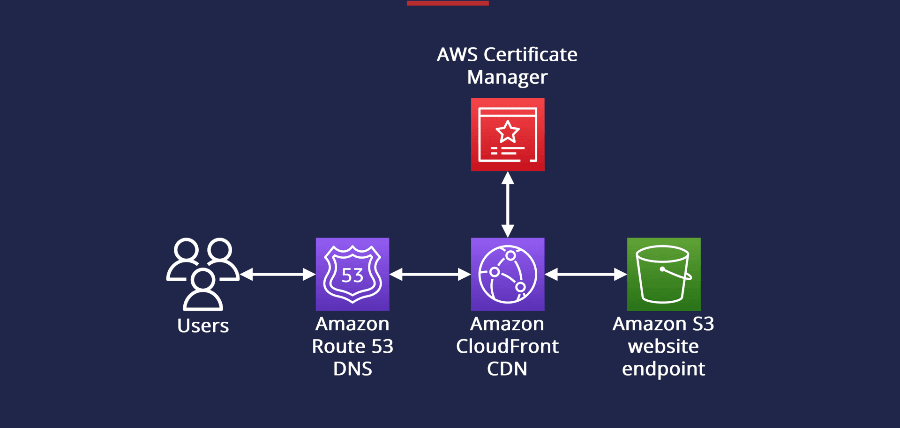

Hosting a Secure Stastic Website
Project Overview:
The project demonstrates how to host a secure, performant, and scalable static site with custom domain support and HTTPS encryption. It’s designed to showcase best practices in cloud-native architecture, DNS management, and content delivery.
Architecture Summary:
- Amazon S3: Stores the static website assets (HTML, CSS, JS) with public read access and website hosting enabled.
- Amazon CloudFront: Distributes content globally with low latency and high transfer speeds. Configured to serve from the S3 origin and enforce HTTPS.
- AWS Certificate Manager (ACM): Provides a free SSL/TLS certificate for HTTPS support on the custom domain.
- Amazon Route 53: Manages DNS records for the custom domain, including A/AAAA records pointing to CloudFront and validation records for ACM.
Steps taken to complets this project :
1. Create and Configure S3 bucket
.png)
.png)
- Go to Amazon S3 → Create a bucket.
- Name it exactly as your bucket.
- Disable Block all public access.
- Enable Static website hosting → Set index.html as the entry point.
- Upload your site files.
- Add a Bucket Policy to allow public read access:
2. Request SSL Certifacte (ACM)
.png)
.png)
- Go to AWS Certificate Manager → Request a public certificate.
- Enter your domain (ntshalaempire.com).
- Choose DNS validation.
- ACM provides CNAME records—copy these.
3. Configure DNS In Route 53
.png)
.png)
- Go to Route 53 → Hosted Zones → Select your domain.
- Add the CNAME records from ACM to validate your certificate.
- Create an A record (alias) pointing to your CloudFront distribution (next step).
4. Create Cloudfront Distribution
.png)
.png)
- Go to CloudFront → Create distribution.
- Origin domain: your S3 bucket website endpoint.
- Viewer protocol policy: Redirect HTTP to HTTPS.
- Alternate domain names (CNAMEs): ntshalaempire.com
- Attach the ACM certificate.
- Set default root object: index.html.
5. Connect CloudFront to Route 53
.png)
- In Route 53, create an A record (alias) pointing to your CloudFront distribution.
- This enables your custom domain to serve content via CloudFront.
6. Final Validation
.png)
Visit https://ntshalaempire.com and confirm:
- Site loads over HTTPS
- Content is fast and globally distributed
- DNS routing works correctly